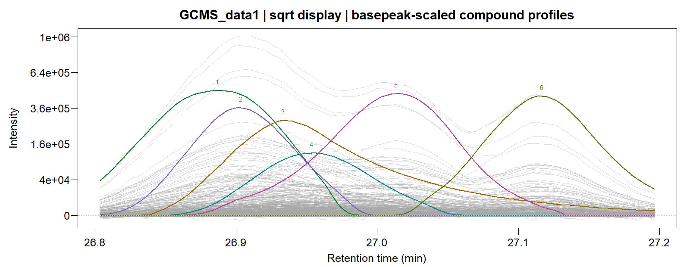
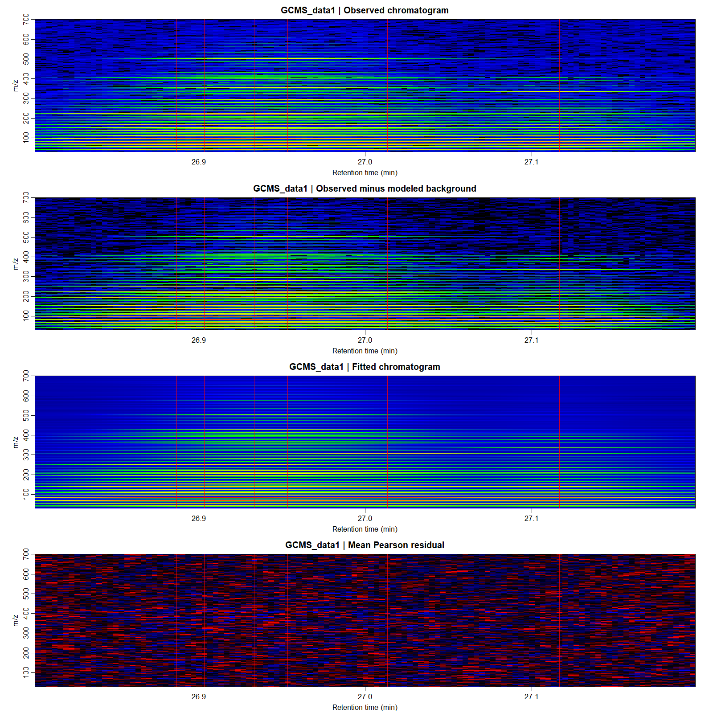
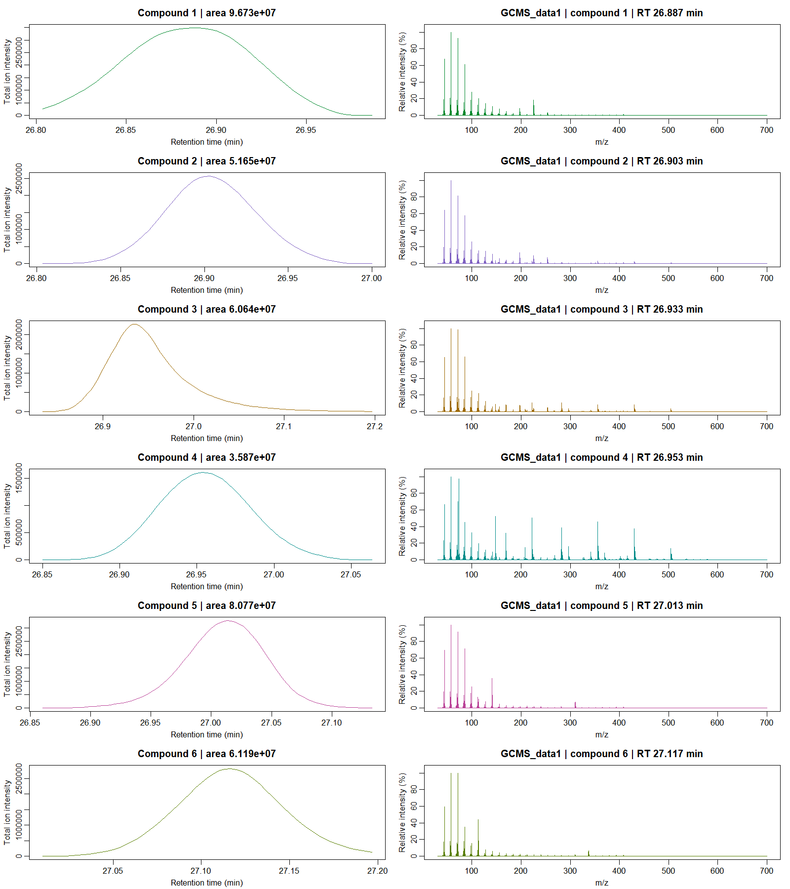
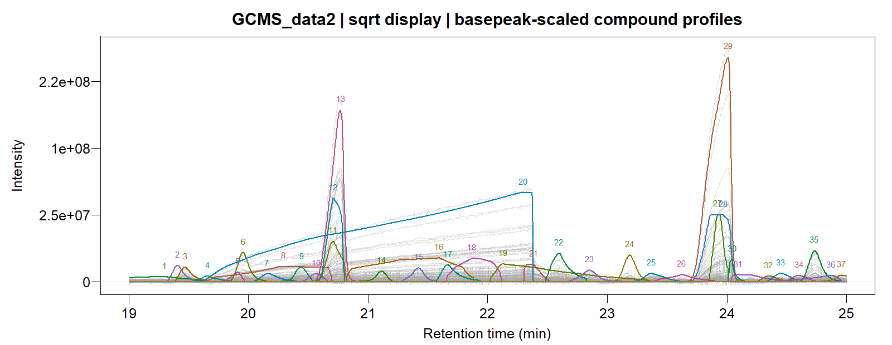
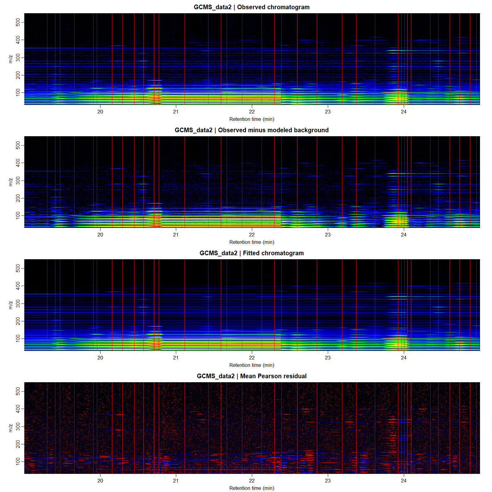
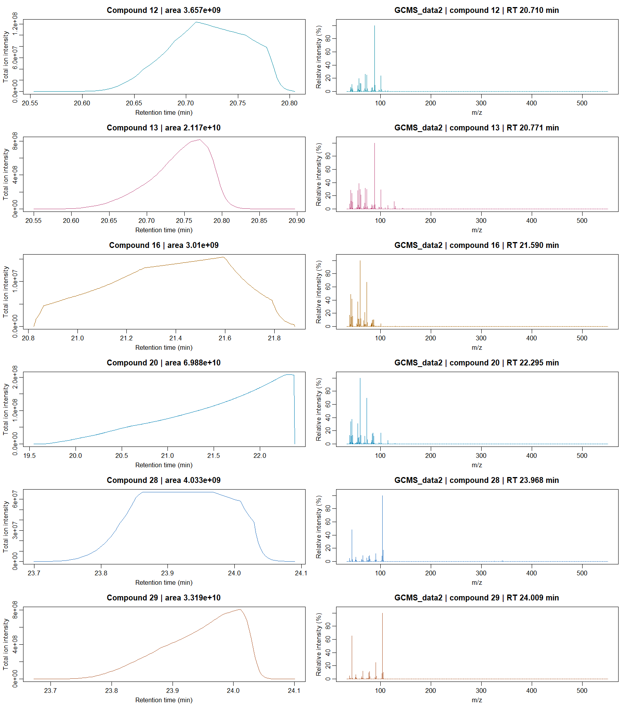

Deconvolve a GC/MS chromatogram and export its compound spectra
Source:R/GCMS_plot.R, R/GCMSdeco.R
GCMSdeco.RdRead an ANDI-MS netCDF chromatogram, estimate a smoothly time-varying point
spread function, recover log-concave compounds with splogconNMF(), and
write a NIST-compatible MSP spectral library. All original mass channels
are retained in the final spectra.
Usage
# S3 method for class 'GCMSdeco'
residuals(
object,
type = c("pearson", "response"),
time_range = NULL,
mass = NULL,
...
)
GCMSdeco(
cdf_file,
msp_file,
family = quasipoisson("identity"),
lambda = "gic",
nwindows = 10L,
alkanes_file = NULL,
time_range = NULL,
calibration_range = NULL,
baseline_df = NULL,
precluster = 32L,
dispersion = NULL,
theta = NULL,
correlation = c("auto", "none", "lag1"),
ncores = NULL,
control = list(),
psf_control = list(),
verbose = FALSE,
xlsx_file = NULL,
sample_name = NULL
)
# S3 method for class 'GCMSdeco'
coef(object, ..., normalize = c("none", "l1"))
# S3 method for class 'GCMSdeco'
fitted(object, ...)
# S3 method for class 'GCMSdeco'
nobs(object, ...)
# S3 method for class 'GCMSdeco'
logLik(object, ...)
# S3 method for class 'GCMSdeco'
AIC(object, ..., k = 2)
# S3 method for class 'GCMSdeco'
BIC(object, ...)
# S3 method for class 'GCMSdeco'
GIC(object, ...)
# S3 method for class 'GCMSdeco'
EBIC(object, ...)
# S3 method for class 'GCMSdeco'
MBIC(object, ...)
# S3 method for class 'GCMSdeco'
print(x, ...)Arguments
- object, x
A fitted
GCMSdecoobject.- type
Residual type:
"pearson"uses the fitted marginal variance;"response"returns observed minus fitted latent intensity.- time_range
Optional increasing pair of sample retention-time bounds in minutes. Infinite bounds are accepted. This can exclude the solvent interval or select a chromatographic window.
- mass
Optional nominal m/z values for residual extraction.
- ...
Further method arguments.
- cdf_file
Local ANDI-MS
.cdfpath or HTTP(S) URL. The optional ncdf4 package is required. Masses are binned to the nearest integer m/z; traces between the minimum and maximum recorded mass are retained.- msp_file
Output
.msppath. Parent directories are created if necessary; an existing output file is replaced.- family
Identity-link noise model accepted by
splogconNMF(). The defaultquasipoisson("identity")estimates one pooled dispersion across channels, suitable for overdispersed instrumental intensities.- lambda
"gic"(default),"aic","bic","ebic","mbic", or a nonnegative numeric compound penalty. See Details for its scale.- nwindows
Number of overlapping blind-PSF windows, default
10L.1Luses a shared PSF. The returned sparse design interpolates the PSFs smoothly across the chromatogram.- alkanes_file
Optional ANDI-MS alkane-standard chromatogram. Isolated peaks calibrate the initial PSF through
estimate_psf(), with automatic support, sample refinement and resampling to the sample scan interval.- calibration_range
Optional retention-time bounds in minutes for the standard. The whole standard is used when omitted.
- baseline_df
Dimension of the nonnegative cubic B-spline background. Use
1Lfor a constant background in a short window. A spline uses at least four basis functions.NULLchooses a low-dimensional basis from the scan count and typical PSF width; an integer of at least four fixes its dimension.- precluster
NULLorFALSEuses every channel throughout.TRUEuses up to 32 groups; an integer supplies another maximum. Size-adjusted Poisson clustering, aggregation, selection and fusion operate in that reduced space, followed by refinement on all original channels.- dispersion
Known common Gaussian variance, quasipoisson scale, Gamma dispersion, NB1 variance-to-mean ratio or common Gamma scale.
NULLestimates a pooled value from temporal differences and freezes it. Parameters supplied in a signal_families object are used when this argument is omitted. Poisson and NB2 use unit dispersion.- theta
NB2 shape, shared by all original channels.
NULLestimates and freezes a temporal moment estimate; a positive value fixes it; a negative value initializes at its absolute value and enables pooled likelihood updates. A fixed shape in the supplied NB family is respected.- correlation
"auto"or"lag1"estimates an optional lag-one working adjustment to the selection penalty."none"uses independent observations; a number between zero and 0.49 supplies the lag-one correlation.- ncores
OpenMP workers.
NULLuses the detected physical cores.- control
Named list:
broad_repeats=1L,full_sweeps=1L,final_polishes=1L,native_sweeps=6L,block_sweeps=6L,psf_width=NULL,screen_factor=1,censor=0.5,linkage="ward",joint_trials=NULL,profile_cycles=10L,fusion_passes=5L,profile_fusion=TRUE.joint_trialsuses direct Poisson fusion for Poisson data and joint local refinement for the other families.psf_widthsupplies the typical FWHM in scans. When omitted, local updates use the middle design column and broad-profile fusion uses the median of up to 21 representative design columns.screen_factorscales the initial selection penalty.censoris the Gamma detection limit: recorded zero intensities are left-censored below this value; positive values must be at least the limit. Zero requests an uncensored Gamma model. A supplied Gamma family constructor provides its own detection limit unless overridden here.linkagemay be"ward"or"bregman".joint_trialsallows overlapping compounds to adjust together during local fusion refinement.profile_cyclesbounds the original-channel shape/background refinement; zero disables it.fusion_passesbounds broad-anchor and compatible-tail fusion after that refinement. For a narrow, spectrally matching fragment contained in a broad profile, a guarded whole-profile refit can also update the shared background. Neighbouring modes stay within one quarter of their initial FWHM, and the merge is retained only when the original-channel criterion decreases.profile_fusionenables a final conservative fusion pass on all original channels, followed by one local likelihood-based profile/spectrum refit.- psf_control
Named PSF settings. Entries
method,standard,precluster,weightsandoffsetare passed directly toestimate_psf(). Other entries form itscontrollist, for examplelist(kernel_est=psf, maxiter=0L)keeps a supplied PSF fixed andlist(L=61L, maxiter=8L, tol=1e-3)estimates a PSF on the sample.list(standard=attr(GCMS_data2, "alkanes_TIC"))uses the bundled calibration TIC; its numeric names supply retention times.precluster=1Luses the total-ion signal,FALSEthe original channels, and32Lat most 32 groups. The PSF uses the same noise family and fixed noise estimates as the final factorization, with its information adjustment included in the weights.- verbose
Print stage timings, objective changes and compound counts.
- xlsx_file
Optional Excel output path. The workbook contains compound areas and one spectrum column on the first sheet, followed by run metadata including the sample name. Fragments use
m/z (intensity), sorted by decreasing intensity and scaled to base peak 9999; fragments rounding to zero are omitted from this display. Requires the optional openxlsx package.NULLomits Excel export.- sample_name
Sample identifier, defaulting to the CDF filename without its extension. Included in the compound table, MSP entries and workbook.
- normalize
Spectral coefficient normalization:
"none"returns integrated channel intensities;"l1"gives a unit-sum spectrum per compound, with its magnitude carried by the compound area.- k
Complexity multiplier for
stats::AIC().
Value
An object of class GCMSdeco containing model (the full
factorization), a compounds table with names, retention times,
original-file apex scan indices, integrated intensities and ion counts,
the unified PSF estimate and sparse design in psf, optional standard calibration
in psf_standard, background_df, psf_width_scans,
an average precision diagnostic, retention-time and mass axes, original scan
indices, sample identity, output file paths and stage timings. Coefficient, fitted-value,
log-likelihood and information-criterion methods delegate to model.
Details
File formats. ANDI-MS variables scan_index, point_count,
scan_acquisition_time, mass_values and intensity_values
define the scan spectra. Scan indices are zero-based. Padding between scans
is accepted. Intensities must be finite and nonnegative. Times are converted
to minutes; absent units use the ANDI-MS seconds convention. The selected
retention-time interval is read directly from the point arrays.
MSP entries are ordered by profile apex time, with a unique compound name,
retention time and integrated ion intensity in the comments, followed by
mass/intensity pairs. Exported spectra have base peak 999 and retain every
positive fitted ion. coef() returns unnormalized fitted spectra.
With normalize="l1", coef() returns spectra summing to one.
The MSP and R object retain every positive fitted ion. The spreadsheet's
compact spectrum text is a rounded display alongside the integrated areas.
Their compound profiles are \(P_{ir}=H_{ir}\sum_j S_{rj}\), preserving
\(HS=PT\). The workbook reports area, equal to \(\sum_j S_{rj}\), in
intensity-scans, and area_min, the trapezoidal integral of
\(P_{\cdot r}\) over retention time, in intensity-minutes.
The returned object stores the factors and source CDF path. Observed data are loaded from the CDF only when a plot needs them. Fitted signals are reconstructed from the factors; the observed matrix is released after fitting.
PSF and background. estimate_psf() estimates constant or smoothly
time-varying PSFs from the sample, optionally starting from an alkane standard.
Original channels, outcome groups and the total-ion signal are supported.
Interpolated columns are projected to log concavity on their local support
and normalized to unit sum. Their typical full width at half maximum,
\(w\), sets the background dimension to
$$q=\max\{4,\min[40,3+\lceil n/(200w)\rceil]\}.$$
Background coefficients are nonnegative and unpenalized. This keeps the
baseline much smoother than an individual elution peak.
The calibrated median PSF width also sets the guard for the final
broad-profile fusion pass in splogconNMF(). Set
control=list(profile_fusion=FALSE) to disable that pass.
Shared noise model. Noise parameters are estimated once from the
original channels and reused in PSF estimation and factorization. The PSF
weights include the information adjustment \(1/\kappa\), where
\(\kappa=1+2\widehat\rho_1\). Aggregation adjusts the variance parameters
according to the selected family; NB2 and ordinary Gamma use moment matching.
See estimate_psf() for the distributional details. The returned
psf_working_weight summarises the average Poisson-scale precision for
comparing noise scales; the actual PSF likelihood uses the specified family.
precluster=32L performs selection and fusion in at most 32 size-adjusted
outcome groups, followed by refinement on every original channel. See
splogconNMF() for the selection criterion and shape constraints. The
spreadsheet and returned coefficient rows use increasing apex retention time. Rank selection,
hard log concavity, censored Gamma intensities and compound-count information
criteria follow splogconNMF().
Experimental GC/MS examples
The GC/MS deconvolution tutorial converts the bundled GCMS_data1 and GCMS_data2 matrices to CDF, fits the full-channel models and exports their spectra. It includes timings, information criteria and all plot types, alongside the algorithm. GCMS_data1: overlapping cuticular hydrocarbons.



GCMS_data2: beer volatiles with an asymmetric acid peak.


References
NIST MS Search user manual, section on NIST text format: https://chemdata.nist.gov/mass-spc/ms-search/docs/Ver20Man.pdf.
Examples
if (FALSE) { # \dontrun{
library(L0glm)
data(GCMS_data1)
data(GCMS_data2)
out <- file.path(tempdir(), "L0glm-GCMS")
dir.create(out, showWarnings = FALSE)
write_GCMS_cdf(GCMS_data1, file.path(out, "GCMS_data1.cdf"))
write_GCMS_cdf(GCMS_data2, file.path(out, "GCMS_data2.cdf"))
fit1 <- GCMSdeco(file.path(out, "GCMS_data1.cdf"),
file.path(out, "GCMS_data1.msp"), nwindows = 1L, precluster = 16L,
baseline_df = 1L,
correlation = "none", ncores = 8L,
psf_control = list(kernel_est = convkernel("gaussian", 65L,
list(sigma = 8)), maxiter = 0L))
fit2 <- GCMSdeco(file.path(out, "GCMS_data2.cdf"),
file.path(out, "GCMS_data2.msp"), nwindows = 1L, precluster = 32L,
correlation = "none", ncores = 8L,
psf_control = list(kernel_est = convkernel("gaussian", 65L,
list(sigma = 6)), maxiter = 0L))
fit1$compounds
GIC(fit2)
coef(fit2, normalize = "l1")
plot(fit1, type = "lines", nrows = 1L,
minutes_per_panel = diff(range(fit1$time)) + .01, labels = TRUE)
plot(fit1, type = "heatmap")
plot(fit1, type = "profiles", nrows = 3L)
plot(fit2, type = "lines", file = file.path(out, "GCMS_data2_traces.pdf"),
nrows = 1L, minutes_per_panel = diff(range(fit2$time)) + .01)
plot(fit2, type = "heatmap", file = file.path(out, "GCMS_data2_heatmaps.pdf"))
plot(fit2, type = "profiles", file = file.path(out, "GCMS_data2_profiles_and_spectra.pdf"))
# For a full chromatogram with a separate calibration standard:
beer <- GCMSdeco("beer.cdf", "beer.msp", alkanes_file = "alkanes.cdf",
xlsx_file = "beer.xlsx", nwindows = 10L, precluster = 32L)
# Automatic PSF estimation from a bundled window and its named alkane TIC.
psf <- estimate_psf(GCMS_data2, nwindows = 3L)
dim(psf$X)
# A CDF contains the chromatogram; pass the R calibration attribute explicitly.
calibrated <- GCMSdeco(file.path(out, "GCMS_data2.cdf"),
file.path(out, "GCMS_data2_calibrated.msp"), nwindows = 3L, precluster = 32L,
psf_control = list(standard = attr(GCMS_data2, "alkanes_TIC")))
} # }